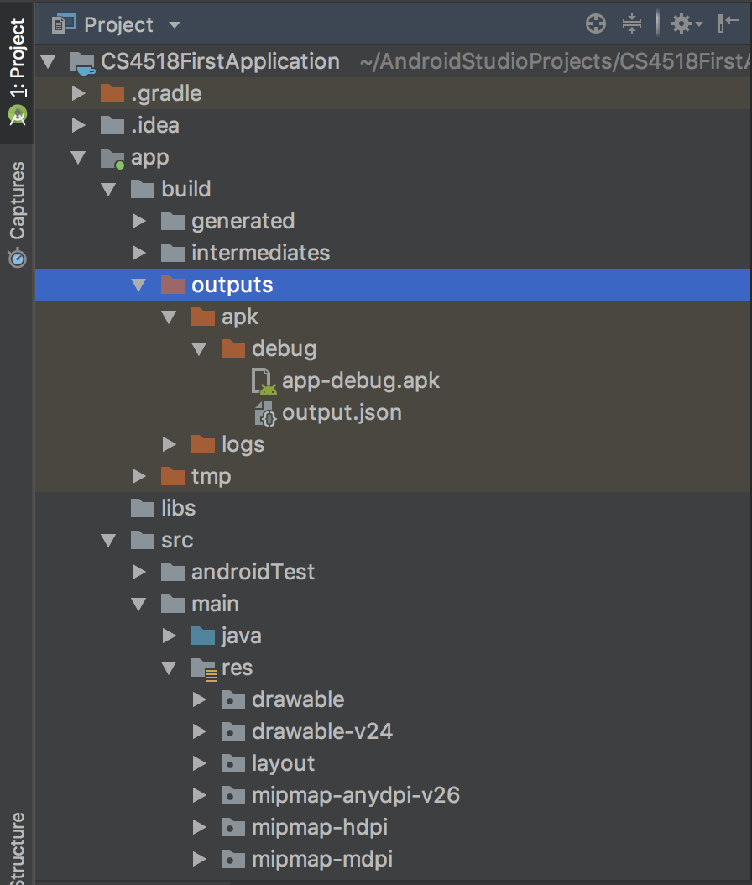

This tutorial will show you how to generate a debug APK to project submission.
Prerequisites:
- Android Studio 3.2
- Android physical or virtual devices API 27
After you finished your project code, and make sure that your app behaves as expected when running in physical device or AVD. That is, the Android Studio is able to install the app to the device.
 Use the green arrow to run the app, or the lightening symbol to apply the change.
Use the green arrow to run the app, or the lightening symbol to apply the change.
On the right side of Android Studio, click on the Gradle button, and that should bring out a floating window that looks similar to the following.
 Use the green arrow to run the app, or the lightening symbol to apply the change.
Use the green arrow to run the app, or the lightening symbol to apply the change.
Click :app -> Tasks -> build and then double click on the assembleDebug
At the bottom window of the Android Studio, you should immediately see similar output as following.
 Sample output of assembleDebug task.
Sample output of assembleDebug task.
You are now ready to locate the debug apk that is required for submission. In Android studio, switch from the default Android view to Project as shown below, and you should see app-debug.apk under the path app/build/outputs/apk/debug/app-debug.apk
In Project view, the app-debug.apk is under the `app/build/outputs/apk/debug/` directory.
Right click on the app-debug.apk and select Reveal in Finder. Copy and paste the debug apk to your project submission folder.
In this tutorial, we use a predefined gradle task assembleDebug to generate the required debug apk. Note Please make sure that the app-debug.apk reflects the most recent modifications.